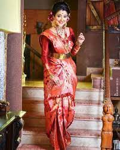
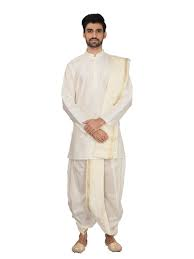
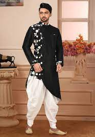
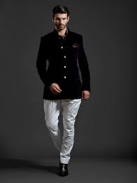
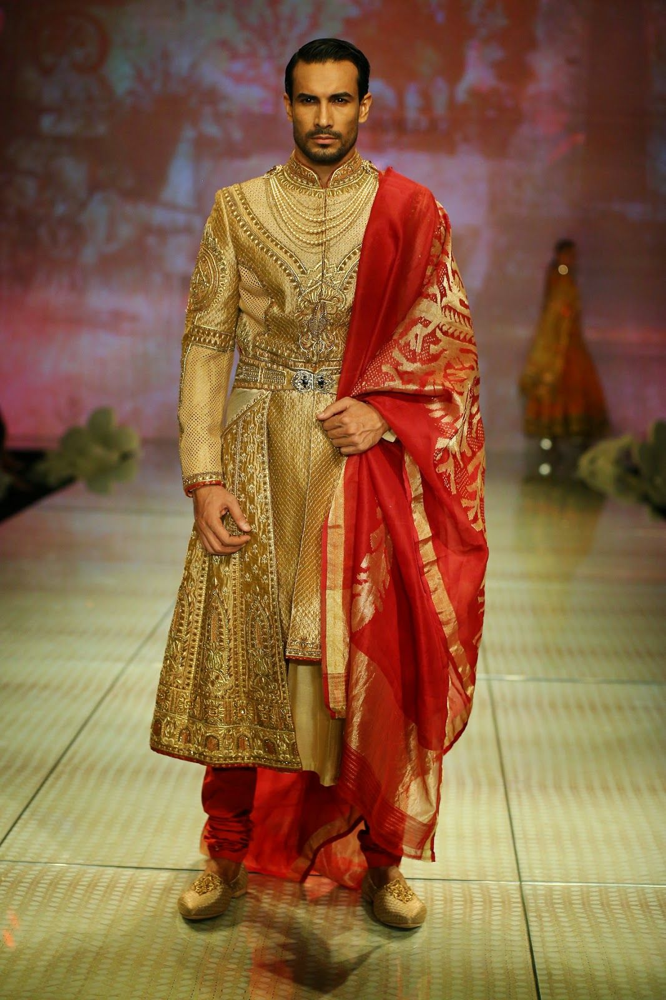
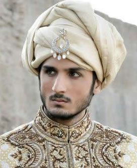
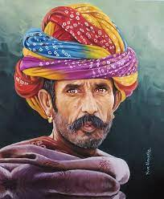

Fashion in India is as ancient as human civilization. It has been interwoven with Indian’s rich culture, history and different regions. What we are seeing now is a collection of decades of knowledge passed on from generation to generation of different
fashion trends that have evolved. In ancient India, clothes were mainly made from locally grown cotton during the Indus Valley Civilization. People from the rich and affluent communities wore clothes -like the sari worn by women- made from imported
silk, while the rest wore clothes made from local fabrics. Women wore knee-length skirts with bangles, necklaces, earrings anklets, rings etc . made from silver, copper, gold and stones like turquoise, quartz etc. The men draped on turbans on
their heads while Kings and priest put on robes. Men also loved to adorn themselves with jewellery just like their women.
Clothing in India is dependent upon the different ethnicity, geography, climate, and cultural traditions of the people of each region of India. Historically, male and female clothing has evolved from simple garments like kaupina, langota, achkan,
lungi, sari, gamcha, and loincloths to cover the body into elaborate costumes not only used in daily wear, but also on festive occasions, as well as rituals and dance performances. In urban areas, western clothing is common and uniformly worn
by people of all social levels. India also has a great diversity[1] in terms of weaves, fibers, colours, and material of clothing. Sometimes, color codes are followed in clothing based on the religion and ritual concerned. The clothing in India
also encompasses the wide variety of Indian embroidery, prints, handwork, embellishment, styles of wearing clothes. A wide mix of Indian traditional clothing and western styles can be seen in India.
Female clothing
Saree
A Saree / sari is a strip of unstitched cloth, ranging from four to nine meters in length, that is draped over the body in various styles. These include: Sambalpuri Saree from East, Mysore silk and Ilkal of Karnataka and, Kanchipuram of Tamil
Nadu from South, Paithani from Maharashtra and Banarasi from North among others. The most common style is for the sari to be wrapped around the waist, with one end then draped over the shoulder baring the midriff.The sari is usually worn over
a petticoat. Blouse may be "backless " or of a halter neck style. These are usually more dressy with a lot of embellishments such as mirrors or embroidery and may be worn on special occasions. Women in the armed forces, when wearing a sari
uniform, don a half-sleeve shirt tucked in at the waist. Teenage girls may wear half-sarees, a three piece set consisting of a langa, a choli and a stole wrapped over it like a saree. Women usually wear full sarees. Indian wedding saris are
typically red or pink, a tradition that goes back to India's pre-modern history. Saris are usually known with different names in different places. The Korial saree is the most famous Bengali saree. It is a crisp white saree with a red border.
Married women generally wear this simple and timeless saree, especially during the Durga Puja celebrations. It is usually paired with a big red bindi and hair that is tied up in a casual bun. Patola saree is a famous saree from Gujarat.
It was made from silk in Patan, Gujarat. These sarees are woven with great precision and are rich in colour and very expensive.
Mekhela Sador

It is the traditional Assamese dress worn by womenThe bottom portion, draped from the waist downwards is called the Mekhela . It is in the form of a sarong—a very wide cylinder of cloth—that is folded into pleats to fit around the waist and tucked
in. The folds are to the right, as opposed to the pleats in the Nivi style of the saree, which are folded to the left. Strings are never used to tie the mekhela around the waist, though an underskirt with a string is often used.
The top portion of the three-piece dress, called the Sador (Assamese: চাদৰ), is a long length of cloth that has one end tucked into the upper portion of the Mekhela and the rest draped over and around the rest of the body. The Sador is
tucked in triangular folds. A fitted blouse is worn to cover the breasts. The third piece is called a Riha, which is worn under the Sador. It is narrow in width. This traditional dress of the Assamese women is very famous for their exclusive
patterns on the body and the border. Women wear them during important religious and ceremonious occasions of marriage. Riha is worn exactly like a Sador and is used as Orni.
>
Rignai
>
Rignai1
It is the traditional dress of Tripuri women, the native inhabitants of Tripura It is worn by wrapping it around the waist. It's worn with "Rikutu " which covers the upper half of the body. It is worn by the every Tripuri women in Tripura.The
most significant rignai is called the "Chamathwi bar " and comprises white cloth bordered by maroon or other colors. The "Chamathwi bar " is worn during important occasions like wedding ceremonies and festivals like Goria Puja and Hangrai.
Salwar Kameez
The salwar is a generic description of the lower garment incorporating the Punjabi salwar, Sindhi suthan, Dogri pajama (also called suthan), and the Kashmiri suthan. The salwar kameez has been worn by the women of Punjab, Haryana and Himachal
Pradesh where the suit has been called the Punjabi suit which is most common in the northwestern part of India (Punjab region). The Punjabi suit also includes the "churidaar " and "kurta " ensemble which is also popular in Southern India where
it is known as the "churidaar ". The salwar kameez consists of loose trousers (the salwar) narrow at the ankles, topped by a tunic top (the kameez). Women generally wear a dupatta or odani (Veil) with salwar kameez to cover their head and
shoulders. It is always worn with a scarf called a dupatta, which is used to cover the head and drawn over the bosom. The material for the dupatta usually depends upon that of the suit and is generally of cotton, georgette, silk, chiffon among
others.The suthan, similar to the salwar is common in Sindh where it is worn with the cholo and Kashmir where it is worn with the Phiran.[38] The Kashmiri phiran is similar to the Dogri pajama. The patiala salwar is an exaggeratedly wide version
of the salwar, its loose pleats stitched together at the bottom.
Churidaar/Anarkali Suit
Churidaar is a variation on the salwar, loose above the knees and tightly fitted to the calf below. While the salwar is baggy and caught in at the ankle, the churidar fits below the knees with horizontal gathers near the ankles. The churidaar
can be worn with any upper garment such as a long kurta, which goes below the knees, or as part of the Anarkali suit. The Anarkali suit is made up of a long, frock-style top and features a slim fitted bottom. The Anarkali is an extremely
desirable style that is adorned by women located in Northern India, Pakistan, and the Middle East. The Anarkali suit varies in many different lengths and embroideries including floor length Anarkali styles. Many women will also opt for heavier
embroidered Anarkali suits on wedding functions and events. Indian women wear Anarkali suits on various other occasions as well such as traditional festivals, casual lunch, anniversary celebrations, etc. The kameez of the Anarkali can be sleeveless
or with sleeves ranging from cap- to wrist-length.
Lehenga Choli (skirt and blouse)
A Ghagra Choli or a Lehenga Choli is the traditional clothing of women in Rajasthan and Gujarat.[citation needed] Punjabis also wear them and they are used in some of their folk dances. It is a combination of lehenga, a tight choli and an odhani.
A lehenga is a form of a long skirt that is pleated. It is usually embroidered or has a thick border at the bottom. A choli is a blouse shell garment, which is cut to fit the body and has short sleeves and a low neck. Different styles of ghagra
cholis are worn by the women, ranging from a simple cotton lehenga choli as daily wear, a traditional ghagra with mirrors embellished usually worn during Navratri for the garba dance or a fully embroidered lehenga worn during marriage ceremonies
by the bride.Popular among unmarried women other than salwar kameez are Gagra choli and Langa voni
"Male Clothing "
Vetti


Dhotis are one of the most common male dresses found in India. A dhoti is from four to six feet long white or colour strip of cotton. This traditional attire is mainly worn by men in villages. It is held in place by a style of wrapping and sometimes
with the help of a belt, ornamental and embroidered or a flat and simple one, around the waist. Owing to its widespread popularity throughout India, different languages have different terms to describe dhotis. In Marathi, it is called dhotar.
In Punjabi, it is known as a chadra. In Gujarati it's known as "Dhotiyu ", while in Telugu they are called Pancha. In Tamil, they are called veyti, and in Kannada it is called Panche/Lungi. Over the dhoti, men wear shirts or kurtas.
Panche or Lungi
A Lungi, also known as sarong, is another traditional garment of India. A Mundu is a lungi, except that it is always white.[47] It is either tucked in, over the waist, up to knee-length, or is allowed to lie over and reach up to the ankle. It is usually
tucked in when the person is working, in fields or workshops, and left open usually as a mark of respect, in worship places, or when the person is around dignitaries. Lungis, generally, are of two types: the open lungi and the stitched lungi.
The open lungi is a plain sheet of cotton or silk, whereas the stitched one has both of its open ends stitched together to form a tube-like structure. Though mostly worn by men, elderly women also prefer lungi to other garments owing to its good
aeration.[48] It is most popular in south India, though people of Bangladesh, Brunei, Indonesia, Malaysia, Myanmar, and Somalia also can be seen in lungis, because of the heat and humidity, which create an unpleasant climate for trousers, though
trousers have now become common outside the house
Achkan
Achkan is a small-jacket that usually sports exposed buttons through the length of the jacket. The length is usually just at the knees and the jacket ends just below the knee. Achkan is very similar to the Sherwani which is much a much longer
coat-jacket dress The jacket has a Nehru collar.[50] The Achkan was mostly worn with tight-fitting pants or trousers called churidars. Achkan is made from various fabrics for both formal and informal occasions. The achkan features traditional
Indian embroidery like gota and badla. Achkan was commonly worn by the grooms during wedding ceremonies[51] or other formal festive occasions in the Indian subcontinent but when it evolved into the Nehru Jacket, the achkan became less worn.
It was used by men. In India, the achkan is generally worn for formal occasions in winter, especially by those from Rajasthan, Punjab, Uttar Pradesh and Hyderabad. The achkan later evolved into the Nehru Jacket, which is now popular in India.
It may be embroidered with gold or silver. A scarf called a dupatta is sometimes added to the achkan.
Bandhgala

A Jodhpuri or a Bandhgala is a formal evening suit from India. It originated in the Jodhpur State, and was popularized during the British Raj in India. Also known as Jodhpuri Suit,[citation needed] it is a western style suit product, with a coat
and a trouser, at times accompanied by a vest. It brings together the western cut with Indian hand-embroidery escorted by the Waist coat.[52] It is suitable for occasions such as weddings and formal gatherings. The material can be silk or
any other suiting material. Normally, the material is lined at the collar and at the buttons with embroidery. This can be plain, jacquard, or jamewari material. Normally, the trousers match that of the coat. There is also a trend now to wear
contrasting trousers to match the coat colour. Bandhgala quickly became a popular formal and semi-formal uniform across Rajasthan and eventually throughout India.
Angarakṣaka
The term angarkha is derived from the Sanskrit word Aṅgarakṣaka, which means protection of the body.[54] The angarkha was worn in various parts of the Indian Subcontinent, but while the basic cut remained the same, styles and lengths varied from
region to region. Angarakha is a traditional upper garment worn in the Indian Subcontinent which overlaps and is tied to the left or right shoulder. Historically, the Angrakha was a court outfit that a person could wrap around himself, offering
flexible ease with the knots and ties appropriate for wearing in the various principalities of ancient India
Jama

The jama is a long coat that was popular during the Mughal period. There are many types of jama costumes which were worn in various regions of South Asia, the use of which began to wane by the end of the 19th century A.D.[56] However, men in parts
of Kutch still wear the jama also known as the angarkha[57] which has an asymmetric opening with the skirt flaring out to around the hips. However, some styles fall to below the knees.
Dastar

The Dastar, also known as a pagri, is a turban worn by the Sikh community of India. Is a symbol of faith representing values such as valour, honour and spirituality among others. It is worn to protect the Sikh's long, uncut hair, the Kesh which
is one of the Five Ks of Sikhism.[59] Over the years, the dastar has evolved into different styles pertaining to the various sects of Sikhism such as the Nihang and the Namdhari.
Pheta
Pheta is the Marathi name for turbans worn in the state of Maharashtra. Its usually worn during traditional ceremonies and occasions. It was a mandatory part of clothing in the past and have evolved into various styles in different regions.[61]
The main types are the Puneri Pagadi, Kolhapuri and Mawali pheta Originally worn by the kings of Mysore during formal meeting in durbar and in ceremonial processions during festivals, and meeting with foreign dignitaries, the Mysore peta
has come to signify the cultural tradition of the Mysore and Kodagu district.[63] The Mysore University replaced the conventional mortarboard used in graduation ceremonies with the traditional peta.
Rajasthani safa

Turbans in Rajasthan are called pagari or "safa ". They are distinctive in style and colour, and indicate the caste, social class and region of the wearer. In the hot and dry regions, turbans are large and loose. The paggar is traditional in while the safa is to Marwar.[65] The colour of the pagaris have special importance and so does the pagari itself. In the past, saffron stood for valour and chivalry. A white turban stood for mourning. The exchange of a turban meant undying
friendship.
 Saree
Saree
 Mekhela Sador
Mekhela Sador